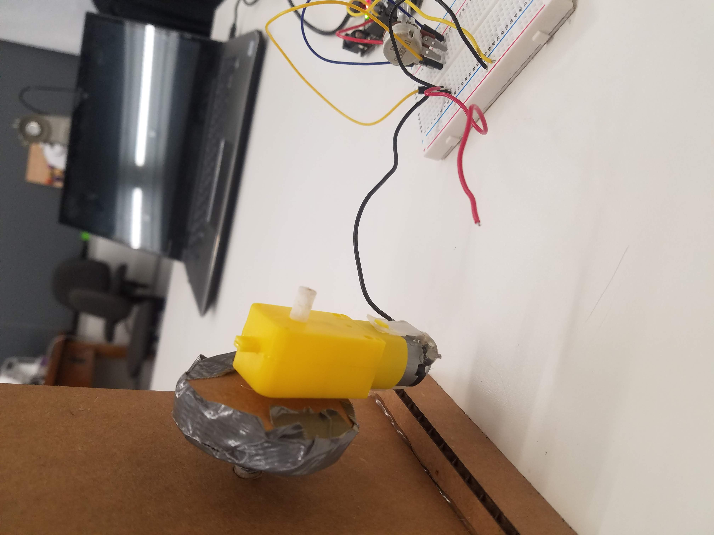

<div class="container-fluid">
<p> This week, we focused on using hand tools and fabrication. </p>
<p> We were instructed to create a kinetic sculpture that we could control with a circuit on a breadboard. I took inspiration from a <a href="https://youtu.be/PHzZjUK9BuQTo">YouTube video</a> by EHC Gear and attempted to make a kinetic sculpture of a butterfly. To start, I used Fusion 360 to sketch the necessary pieces and laser cut them from cardboard. </p>
<p> This is what my final design looked like in Fusion 360:
<p> The assembly was pretty straightforward, but I ran into several challenges along the way. First, I realized that the holes I made for the skewers controlling the flapping motion of the wings and the movement of the body up and down were too snug. As a result, the wings and body would remain stuck in the "up" position and would not return automatically to the "down" position. As I had already glued all the components together and could not make the skewer holes larger without damaging the foundation I had painstakingly assembled, I decided to use a syringe to drip water around the skewer holes. This softened the cardboard enough that I could enlarge the holes by manipulating the skewers. </p>
<p> After that, I realized that the pospicle stick base the skewers were attached to were periodically and seemingly randomly getting stuck on the wheels as the latter turned around the dowel. I fixed this problem by using larger popsicle sticks and cutting them so that they were slightly longer than the radius of the wheel. At this point, things seemed to be going smoothly and I was happy with the progress I had made. The wheels were turning and the skewers were rising and falling accordingly. </p>
<p> Things became more complicated when I added the body and wings on top of the skewers. The wings were large compared to the body and the skewers responsible for their flapping motion were fairly close to the skewers responsible for moving the body up and down. Since the weight of the wings was greater than that of the popsicle stick body and because of the greater torque the skewers under the wings had to apply in order to get them to move, the body remained in the "up" position. This prevented the sculpture from moving properly. I tried adding a weight to the body skewers to counter the weight of the wings, but this did not work effectively for a host of reasons. For example, any weight I added would cause the entire thing to tip over and that was obviously far from ideal. I also tried adding a loose "belt" around the central wheel. I attached the skewers controlling the body to the belt hoping that the belt would cause the skewers to follow the wheel as it rose and fell, but this also failed because on the upstroke the belt would pull up on the wheel with enough force that the downstroke was very difficult to initiate. All the wheels would seize as a result and all motion came to a halt.</p>
<p> Ultimately, I decided to add the motor to see if that would help at all. Unfortunately, it did not. The motor I glued to the body of the sculpture was meant to spin the dowel, something I had been doing manually up until that point. Spinning the dowel caused the wheels to turn, which in turn caused the skewers to move up and down, and this was supposed to make the wings flap and move the body up and down. Instead, due to the system seizing up, the motor broke off the dowel and I had to reattach it using both hot glue and duct tape. Then, the motor stopped working. I later realized this was because the red wire (shown in the pictures below) had broken from where it was glued to the motor, meaning the cirucit was now broken. I tried gluing the red wire back on, but this did not work. Short of sautering together another motor and restarting the entire build process, this could not be helped. </p>
<p> Here is a picture of the red wire that broke off the motor: </p>

<p> Another issue that came up was the wings periodically separating from the body. So, with a seized sculpture and broken motor at 4:30am, I decided to call it a day. This is why I am holding the red wire to the barely exposed corresponding wire on the motor to show that the motor is capable of turning the dowel and spinning the wheels in one video. Note that this was after cutting the belt around the center wheel, so the body is stuck in the "up" position. In another video, I apply constant weight to the skewers connected to the body while manually spinning the dowel to show how the wings would look if they were flapping.</p>
<video width="320" height="240" controls>
<source src="./Video_1.mp4" type=video/mp4>
</video>
<video width="320" height="240" controls>
<source src="./Video_2.mp4" type=video/mp4>
</video>
<p> </p>
<p> I have not yet discussed the circuit on the breadboard. The breadboard was configured as follows: </p>
I used a potentiometer to regulate the speed of the motor, and the breadboard was powered using an adafruit (connected via USB to my laptop) drawing 5 volts. I used a multimeter to measure the total voltage drop in my circuit (5 volts) and the resistance from the potentiometer at the highest setting (9.50 at the 20K setting, or 9500 ohms). </p>
<p> Measuring the resistance of the potentiometer: </p>
<p> Given the voltage and resistance, we can calculate the current through the circuit using Ohm's law:
<p> I = V/R = 5 volts / 9500 ohms = 0.000526315789 amps </p>
<p> While this project did not turn out as expected, I learned a lot from this experience and will try to choose more manageable projects in the future, hopefully with fewer moving parts. As a side note, this project did not flop due to a lack of effort on my part- I spent upwards of 12 hours thinking through, working on, troubleshooting, and documenting the project. Even though the result is not a fully-functioning kinetic sculpture, the individual components work as shown in the videos. With a little more time, I am sure I could have sorted it out. </p>
<p> This was the end result: </p>
<p>That is all for this week. Thank you!!</p>
<p> [Return home](../index.html). </p>